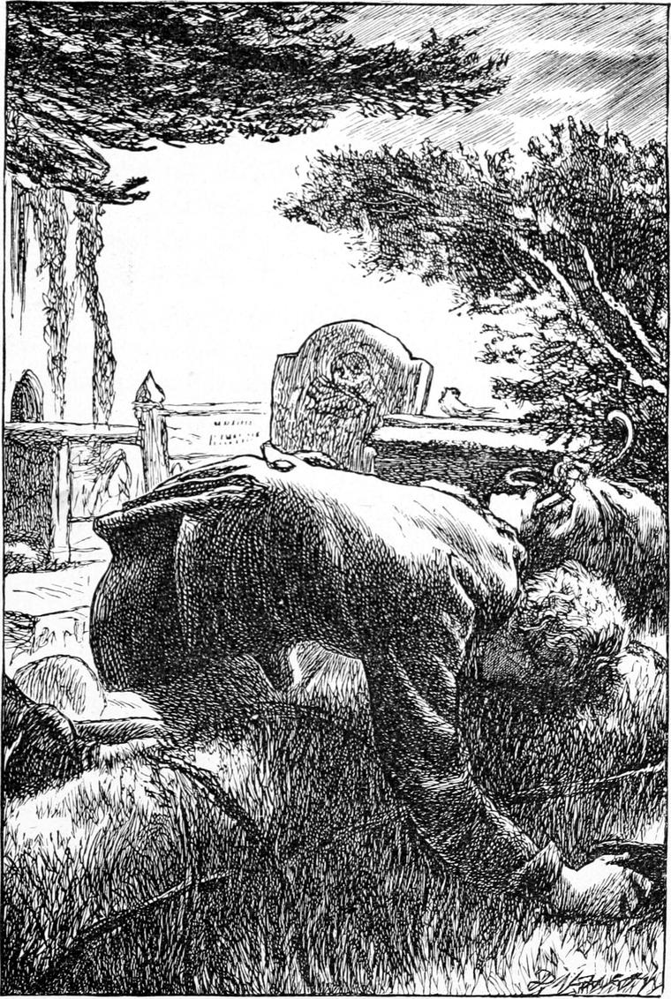

It was a Saturday morning, very early in April, when I climbed the mail-coach to return to my home for the summer; for so the university year is divided in Scotland. The sky was bright, with great fleecy clouds sailing over it, from which now and then fell a shower in large drops. The wind was keen, and I had to wrap myself well in my cloak. But my heart was light, and full of the pleasure of ended and successful labour, of home-going, and the signs which sun and sky gave that the summer was at hand.
Five months had gone by since I last left home, and it had seemed such an age to Davie, that he burst out crying when he saw me. My father received me with a certain still tenderness, which seemed to grow upon him. Kirsty followed Davie’s example, and Allister, without saying much, haunted me like my shadow. I saw nothing of Turkey that evening.
In the morning we went to church, of course, and I sat beside the reclining stone warrior, from whose face age had nearly worn the features away. I gazed at him all the time of the singing of the first psalm, and there grew upon me a strange solemnity, a sense of the passing away of earthly things, and a stronger conviction than I had ever had of the need of something that could not pass. This feeling lasted all the time of the service, and increased while I lingered in the church almost alone until my father should come out of the vestry.
I stood in the passage, leaning against the tomb. A cloud came over the sun, and the whole church grew dark as a December day—gloomy and cheerless. I heard for some time, almost without hearing them, two old women talking together close by me. The pulpit was between them and me, but when I became thoroughly aware of their presence, I peeped round and saw them.

“And when did it happen, said you?” asked one of them, whose head moved with an incessant capricious motion from palsy.
“About two o’clock this morning,” answered the other, who leaned on a stick, almost bent double with rheumatism. “I saw their next-door neighbour this morning, and he had seen Jamie, who goes home of a Saturday night, you know; but William being a Seceder, nobody’s been to tell the minister, and I’m just waiting to let him know; for she was a great favourite of his, and he’s been to see her often. They’re much to be pitied—poor people! Nobody thought it would come so sudden like. When I saw her mother last, there was no such notion in her head.”
Before I could ask of whom they were talking, my father came up the aisle from the vestry, and stopped to speak to the old women.
“Elsie Duff’s gone, poor thing!” said the rheumatic one.
I grew stupid. What followed I have forgotten. A sound was in my ears, and my body seemed to believe it, though my soul could not comprehend it. When I came to myself I was alone in the church. They had gone away without seeing me. I was standing beside the monument, leaning on the carved Crusader. The sun was again shining, and the old church was full of light. But the sunshine had changed to me, and I felt very mournful. I should see the sweet face, hear the lovely voice, no more in this world. I endeavoured to realize the thought, but could not, and I left the church hardly conscious of anything but a dull sense of loss.
I found my father very grave. He spoke tenderly of Elsie; but he did not know how I had loved her, and I could not make much response. I think, too, that he said less than he otherwise would, from the fear of calling back to my mind too vivid a memory of how ill I had once behaved to her. It was, indeed, my first thought the moment he uttered her name, but it soon passed, for much had come between.
In the evening I went up to the farm to look for Turkey, who had not been at church morning or afternoon. He was the only one I could talk to about Elsie. I found him in one of the cow-houses, bedding the cows. His back was towards me when I entered.
“Turkey,” I said.
He looked round with a slow mechanical motion, as if with a conscious effort of the will. His face was so white, and wore such a look of loss, that it almost terrified me like the presence of something awful. I stood speechless. He looked at me for a moment, and then came slowly up to me, and laid his hand on my shoulder.
“Ranald,” he said, “we were to have been married next year.”
Before the grief of the man, mighty in its silence, my whole being was humbled. I knew my love was not so great as his. It grew in my eyes a pale and feeble thing; and I felt worthless in the presence of her dead, whom alive I had loved with peaceful gladness. Elsie belonged to Turkey, and he had lost her, and his heart was breaking. I threw my arms round him, and wept for him, not for myself. It was thus I ceased to be a boy.
Here, therefore, my story ends. Before I returned to the university, Turkey had enlisted and left the place.
My father’s half-prophecy concerning him is now fulfilled. He is a general. I will not tell his name. For some reason or other he had taken his mother’s, and by that he is well known. I have never seen him, or heard from him, since he left my father’s service; but I am confident that if ever we meet, it will be as old and true friends.